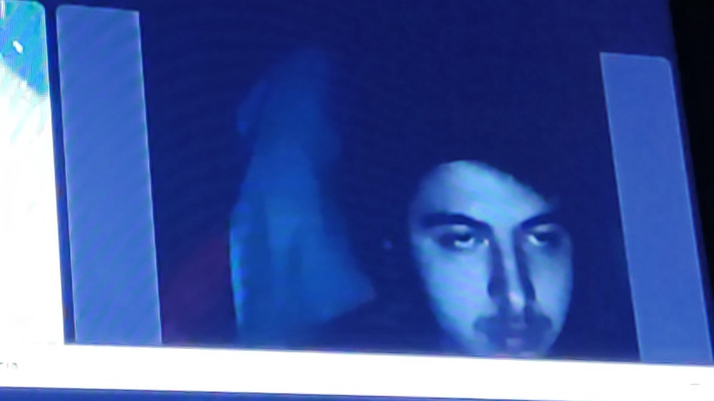

Canciones favoritas: San Lucas, Si Supieras, Colapso, Abrazado a Ti, Es Que Yo Te Quiero A Ti
Peliculas/Series/Genero favoritas: Violet & finch
Este joven emprendedor llegado de coluchi town, llegó para quedarse y demostrar que cedros vale mucho xD perdón, sus cositas buenas son:
1.- Es muy alegre
2.- Es de confianza, osea que mas quieres
3.- Tiene un perro cu.. no, respesta lo que no es tuyo
4.- Le sabe al joji, no cualquiera
Que lindo el pero, como toda persona tiene defectos, y es:
1.- No sé, bueno si se
2.- Te clipea cuando gimes :(
Esta personita tiene APODOS WOOOOOOOW, son estos:
1.- Aldo
2.- Aldiño
3.- Given
4.- Nalgon
5.- Joaquin

Esta persona tiene un hijo muy lindo y lo cuida mucho para que no se haga naco y corriente, que buen papu